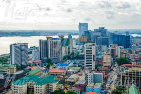

Lagos is Nigeria's largest city and economic hub, known for its vibrant culture, bustling markets, and fast-paced lifestyle. It is located on the southwestern coast of Nigeria, stretching across islands and the mainland. With a population of over 20 million people, Lagos is the most populous city in Africa, serving as the country's financial capital and a major center for trade, technology, and entertainment.
Beyond business, Lagos is famous for its rich cultural scene and lively atmosphere. The city is home to Nollywood, Africa's biggest film industry, and has a thriving music scene that has produced global stars in Afrobeats. Visitors can explore landmarks like the National Arts Theatre, Lekki Conservation Centre, and Victoria Island, while enjoying the city's nightlife, beaches, and diverse cuisine